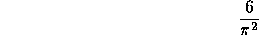
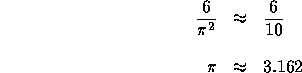

| Pi |
Professor Robert A. J. Matthews of the Applied Mathematics and Computer
Science Department at the
University of Aston in Birmingham, England has recently described howthe
positions of stars across the
night skymay be used to deduce a surprisingly accurate value of  .
This result followed from the application of certain theorems in number theory.
.
This result followed from the application of certain theorems in number theory.
Here, we don'thave the night sky, but can use the same theoretical basis to
form an estimate for  :
:
Given any pair of whole numbers chosen from a large, random collection of numbers, the probability that the twonumbers have no common factor other than one (1) is

For example, using the small collection of numbers: 2, 3, 4, 5, 6; there are 10 pairs that can be formed: (2,3), (2,4), etc. Six of the 10 pairs: (2,3), (2,5), (3,4), (3,5), (4,5) and (5,6) have no common factor other than one. Using the ratio of the counts as the probability we have:

In this problem, you'll receive a series of data sets. Each data set
contains a set of pseudo-random positive
integers. For each data set, find the portion of the pairs which may be
formed that have nocommon factor
other than one (1), and use the method illustrated above to obtain an
estimate for  . Report this estimate for each data set.
. Report this estimate for each data set.
The input consists of a series of data sets.
The first line of each data set contains a positive integer value, N, greater than one (1) and less than 50.
There is one positive integer per line for the next N lines that constitute the set for which the pairs are to be examined. These integers are each greater than 0 and less than 32768.
Each integer of the input stream has its first digit as the first character on the input line.
The set size designator, N, will be zero to indicate the end of data.
A line with a single real value is to be emitted for each input data set
encountered. This value is the estimate for  for the data set.
An output format like the sample below should be used. Answers must be rounded to six digits after the decimal point.
for the data set.
An output format like the sample below should be used. Answers must be rounded to six digits after the decimal point.
For some data sets, it may be impossible to estimate a value for  .
This occurs when there are no pairs
without common factors. In these cases, emit the single-line message:
.
This occurs when there are no pairs
without common factors. In these cases, emit the single-line message:
No estimate for this data set.
exactly, starting with the first character, "N", as the first character on the line.
5 2 3 4 5 6 2 13 39 0
3.162278 No estimate for this data set.